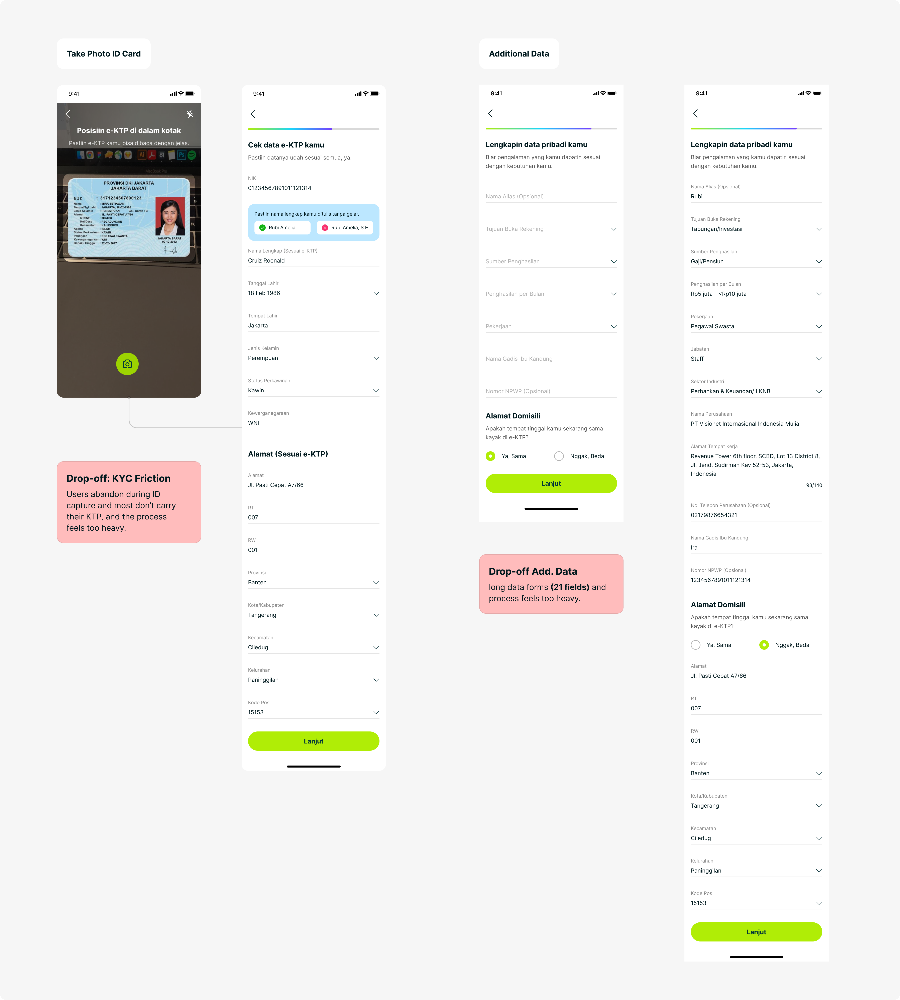
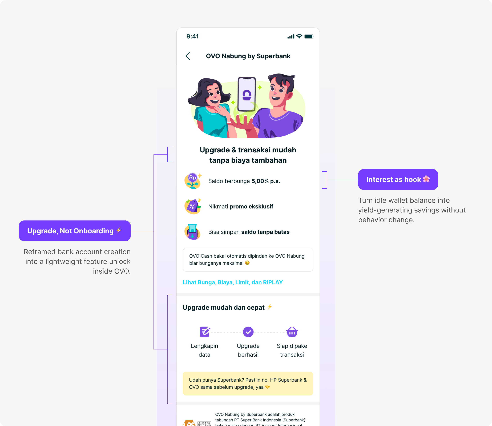
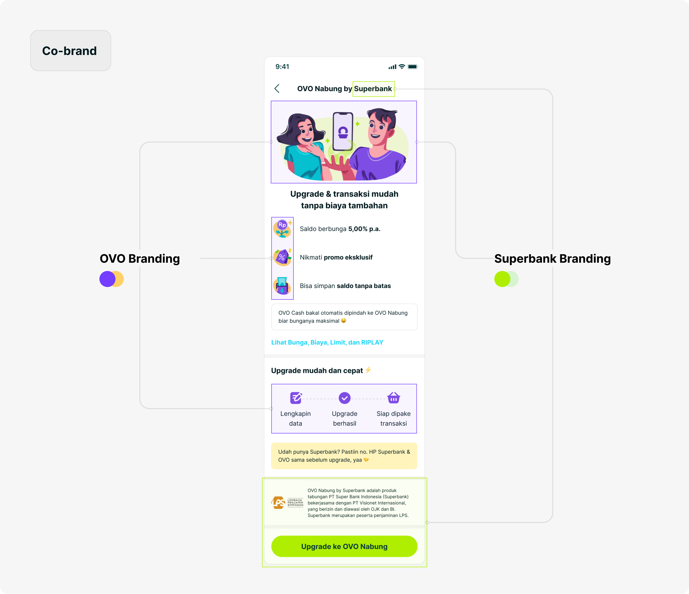
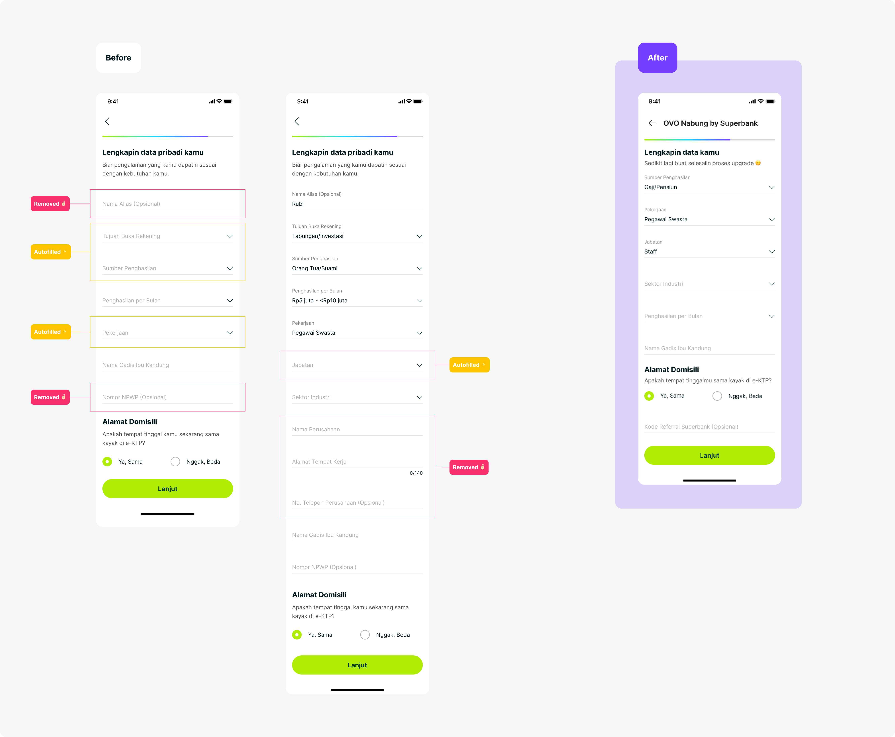
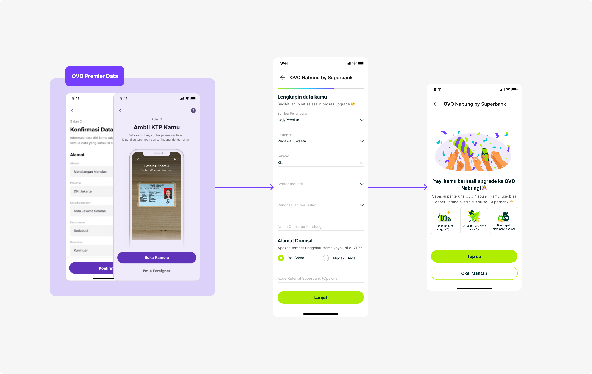
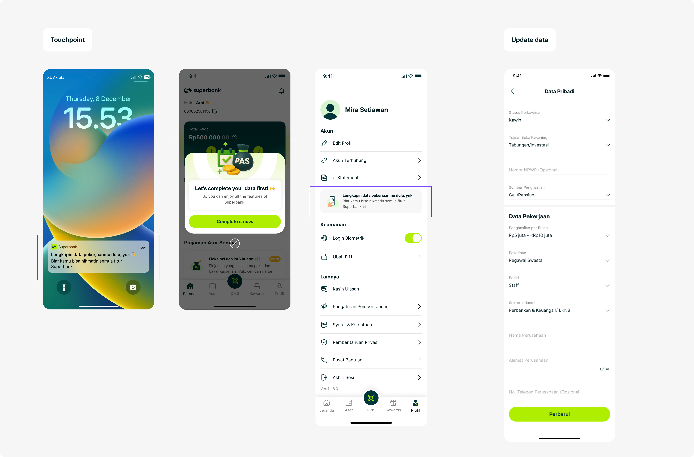
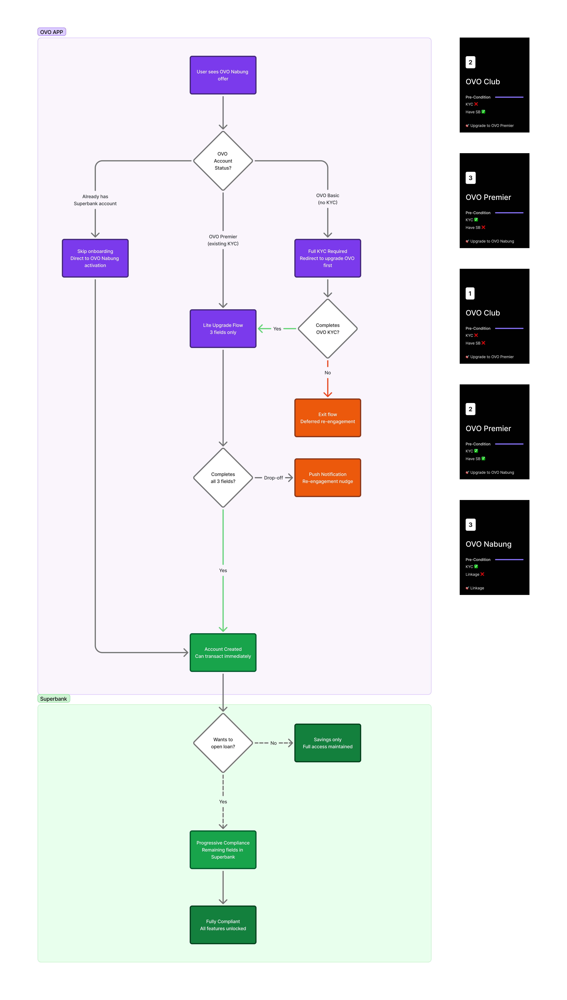
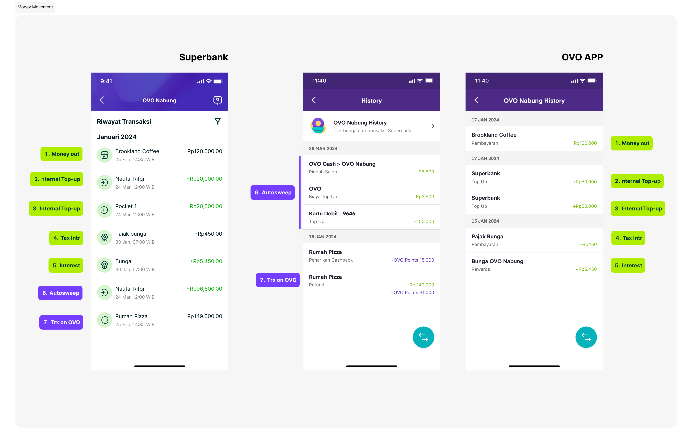

From wallet balance to bank account
The product decisions that made regulated onboarding feel like a lightweight feature unlock.
The registration problem was bigger than the form
Most OVO users already had a primary bank. We were not only competing with other banks; we were competing with “I don’t need this.” Even interested users then met a full regulatory flow with KTP capture, data correction, and 21 additional fields inside an app designed for instant payments.
Onboarding was only the beginning. Payments and transaction history also had to remain coherent across OVO and Superbank. A disjointed post-onboarding experience could undo the trust built during registration.
Superbank, Grab, and OVO operated with different structures, priorities, and timelines. Regulatory approvals, evolving branding, and fragmented product surfaces added complexity to an already tight delivery schedule.
Existing Flow Superbank App
- Start
- Input phone number
- OTP
- Setup PIN
- Biggest drop-off Take ID Card
- Check Data
- Additional Data
- T&C
- Selfie
- Account Created

Make the value immediate and the change feel small
Converting passive OVO users into active Superbank customers came down to two levers working together.
The economic lever. OVO Nabung lets users earn up to 5% interest on idle balance. Money that was already sitting in a wallet could begin working immediately.
The psychological lever. The biggest barrier was the perception of starting over. We framed the account as an upgrade to something users already had: the journey stayed inside OVO, existing data was pre-filled, and Superbank appeared in a supportive role.


Separate savings access from lending compliance
The compliance team initially required all 21 fields up front. Splitting the flow meant users would temporarily exist in a partially verified state, which created a regulatory concern.
I mapped each field to the product it actually served. Identity and address data supported savings; income, source of funds, and risk profiling supported lending. That distinction created the basis for progressive compliance: collect lending data when a user applies for a loan, where it is relevant and intent is higher.

The result: permissive for savings, strict for lending.
Unlock savings first, then complete compliance progressively
Flow 1: Lite upgrade inside OVO
By reusing existing OVO KYC data, the registration form fell from 21 fields to 3—only the information Superbank still needed. After those fields, users had an active OVO Nabung account and could deposit, see their balance, and begin earning interest.


Flow 2: Progressive compliance inside Superbank
The remaining data was collected only when the user applied for a loan. At that point users had higher intent, and verification could be required before the loan proceeded rather than before they could access savings.

Design for every path between two apps
Savings-account creation was not one linear flow. I mapped new-to-bank users, returning drop-offs, existing Superbank customers, and edge cases such as pocket creation in the middle of the journey.
The mapping shaped fallback logic, push-notification triggers, and the cross-app nudge strategy. The goal was that no user would feel lost between OVO and Superbank, regardless of where they entered or stopped.

Connect onboarding to the everyday banking experience
Transaction history and payments needed a shared framework that both partners could implement. I established principles for consistency, clear source indication, and aligned payment flows that could also support future ecosystem partners.

- 1M+users in under one year
- 60%of Superbank users via OVO Nabung
- −20%drop-off on the personal-data page
- 21 → 3onboarding fields
The team delivered the end-to-end experience on time for regulatory requirements, covering onboarding, savings, payment continuity, and edge cases. The work also established a scalable onboarding foundation for future ecosystem partners.
What I carried forward
Given the tight timeline, I deliberately prioritized launch speed and a simpler onboarding flow over perfecting the value-proposition messaging.
Post-MVP feedback showed that users still struggled to understand the interest rate, worried about hidden bank fees, and experienced early trust friction. Those signals became the focus of the first major iteration after launch.
The project reinforced that removing form fields is not enough. A lower-friction journey still needs clear value and trust at the moment a user decides to become a bank customer.